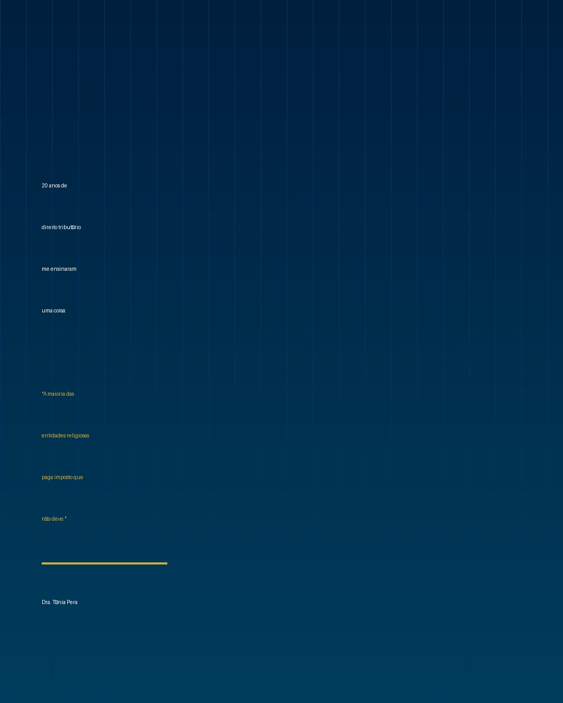
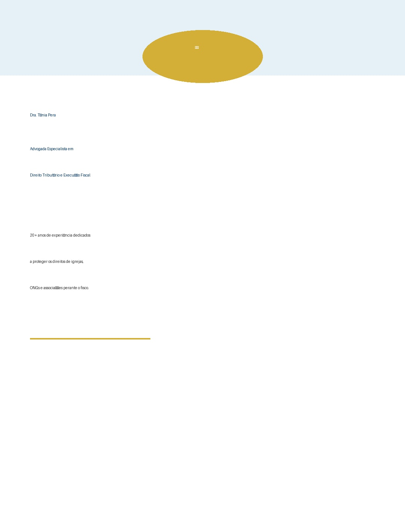
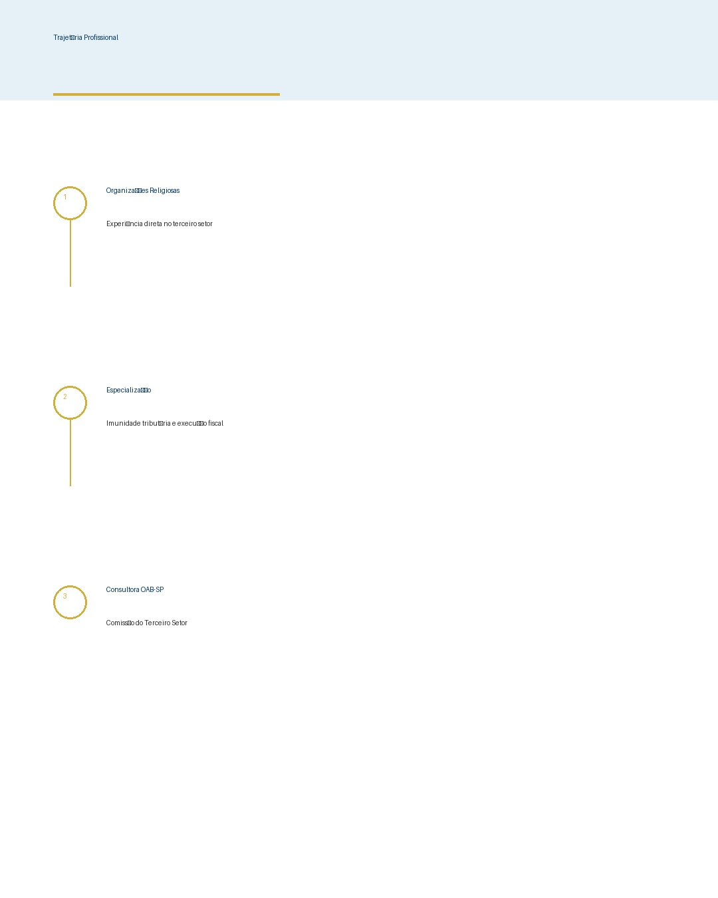
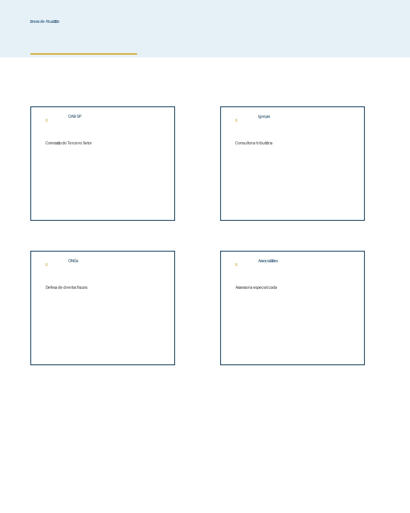

🎉 Carrossel Instagram - Dra. Tânia Pera
✅ Status: Carrossel completo com 5 slides pronto para Instagram
📐 Dimensão: 1080x1350px (padrão Instagram)
🎨 Paleta: Professional Blue/Gold (#003366 + #d4af37)
Preview dos 5 Slides

Slide 1: Capa

Slide 2: Bio

Slide 3: Trajetória

Slide 4: Atuação
Visualizar em Tela Cheia
Clique em qualquer slide abaixo para ampliar:
Slide 1: Capa
Slide 2: Bio
Slide 3: Trajetória
Slide 4: Atuação
Slide 5: CTA
📱 Como usar no Instagram:
- Vá em: Post → Múltiplas imagens/vídeos
- Selecione os 5 slides nesta ordem: 1, 2, 3, 4, 5
- Adicione a seguinte legenda:
📚 20 anos de direito tributário me ensinaram uma coisa:
A maioria das entidades religiosas paga imposto que não deve.
Sou Dra. Tânia Pera, advogada especialista em direito tributário.
Atuo na Comissão do Terceiro Setor da OAB-SP ajudando igrejas, ONGs e associações a se defenderem.
🔗 Me segue e ativa o sininho para aprender mais!
#DireitoTributário #OAB #TerceiroSetor #Igrejas #ONGs #Tributação
4. Publique! 🚀